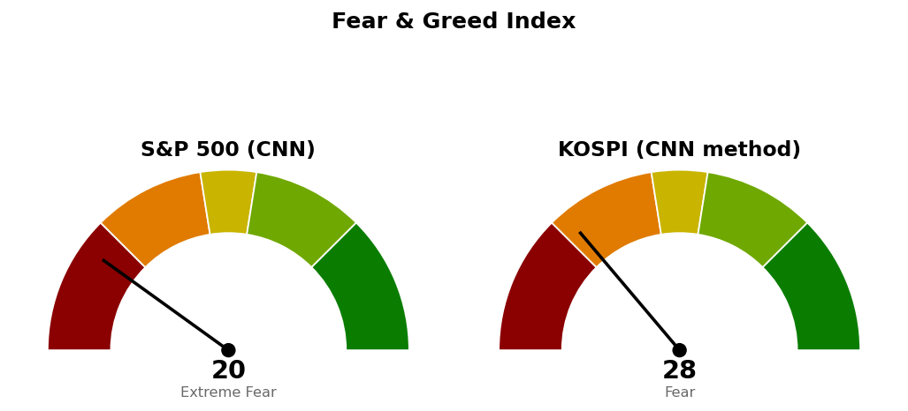

2026-11-05 장전 예측 4건: 4건 중 3건 적중(75.0%)
| 예측 | 근거 | 실제 | 판정 |
|---|---|---|---|
| 나스닥 종합 종가 26,000 하회 | 기준선 26,000 — 11/4 고가 26,049에서 25,737로 되밀려 마감, 나스닥100 선물 -0.80%, S&P 500 선물 +0.11% | 종가 24,315 (-5.52%) | 적중 |
| 나스닥 종합 장중 25,500까지 하락 | 다음 지지 25,500 — 11/4 저가 25,602, 나스닥100 선물 -0.80%(세션 저가 28,168), 반도체 약세로 나스닥이 뒤처진다는 보도(로이터), 퀄컴 약세(MarketWatch) | 저가 24,262 | 적중 |
| S&P 500 종가 7,677 상회 | 20일선 7,677·50일선 7,676 — 11/4 종가 7,689로 두 선을 동시에 넘음, S&P 500 선물 +0.11%, VIX 16.73 | 종가 7,354 (-4.36%) | 빗나감 |
| 기술 (XLK), S&P 500 대비 약세 마감 | 20일 초과수익 -10.91%로 11개 섹터 중 꼴찌, 5일 -6.88%, 나스닥100 선물 -0.80% 대 S&P 500 선물 +0.11% | -8.00% 대 S&P 500 -4.36% | 적중 |
US 최근 90일 누적 59건 중 44건 적중(74.6%) · 최근 20건 20건 중 13건 적중(65.0%)
S&P 500은 시가 7,679, 고가 7,681로 7,677 위에서 출발했으나 저가 7,350 부근인 7,354로 마감해, 상회를 건 예측이 323포인트 차이로 빗나갔습니다.
S&P 500이 20·50일선 위에서 마감한다는 장전 판단은 틀렸습니다. 나스닥 하락 쪽 판단은 맞았으나, 두 지수 모두 적어 둔 "못 지키면" 구간보다 아래까지 내려갔습니다. 직전 시황은 11/5 미국 장전 회차이며, 가격은 11/4 미국 마감 후 회차가 등록한 값입니다.
| 직전 가격 | 판정 방식 | 11/5 결과 | 판정 |
|---|---|---|---|
| 나스닥 기준선 26,000 · 도착지 26,289 | 일봉 종가 상회 / 장중 고가 도달 | 고가 25,559 · 종가 24,315 | 미충족 |
| 나스닥 다음 지지 25,500 | 일봉 종가 하회 | 종가 24,315 | 충족 |
| 나스닥 사다리 1차 25,131 · 2차 24,425 | 장중 저가 도달 | 저가 24,262 | 충족 · 두 회차 집행 |
| 나스닥 취소선 24,262 | 일봉 종가 하회 | 종가 24,315 | 미충족 · 53포인트 위 |
| S&P 500 기준선 7,782 · 도착지 7,845 | 일봉 종가 상회 / 장중 고가 도달 | 고가 7,681 · 종가 7,354 | 미충족 |
| S&P 500 다음 지지 7,541 | 일봉 종가 하회 | 종가 7,354 | 충족 |
| S&P 500 취소선 7,517 | 일봉 종가 하회 | 종가 7,354 | 충족 · 사다리 취소 |
| QQQ 730 · XLE 70.80 · XLP 94.21 · XLV 190달러 | 일봉 종가 상회 | 647.05 · 61.63 · 91.25 · 184.91달러 | 미충족 · 진입 없음 |
20일선·50일선은 지수이동평균입니다. 경로를 말할 근거가 없어 방향을 말하지 않고 기준선과 두 갈래만 냅니다. 사다리는 지수 포인트로만 적습니다.
기준선과 취소선은 한 세션 안에 닿는 거리입니다. 사다리 두 회차가 모두 집행되어 남은 회차가 없고, 11/5 종가 기준 평가손실은 계좌 -0.07%입니다. 실제 반응이 있었던 다음 가격은 23,220이며 종가에서 1,095포인트(하루 평균 변동폭의 2.11배) 아래입니다. 180일 박스(21,425~27,401) 안쪽 판정은 중립(지지 테스트 거래량 혼조, 저점 절하, 상승봉 대 하락봉 거래량비 1.03)입니다.
기준선과 다음 지지 모두 한 세션 안에 닿는 거리입니다. 이번 브리핑은 S&P 500 매수 계획을 내지 않습니다. 11/6 세션에 두 회차를 파는 계획과 겹치고, 같은 날 고용보고서가 나오므로 새 사다리는 11/6 종가를 본 다음 회차에서 판단합니다. 180일 박스(6,475~7,828) 안쪽 판정은 중립(지지 테스트 매도 거래량 감소, 저점 절하, 거래량비 1.01)입니다.
S&P 500 7,354가 200일 이동평균 7,323 위(+0.42%, 4/8부터)라 새 계획을 낼 수 있는 국면이지만, 간격이 하루 평균 변동폭보다 좁습니다.
| ETF | 등록일 | 현재 | 진입 | 손절 | 목표 | 상태 |
|---|---|---|---|---|---|---|
| Invesco QQQ (QQQ) | 2026-10-22 | 647 | 730 | 717 | 750 | 진입 대기 |
| 에너지 (XLE) | 2026-10-20 | 61.63 | 70.80 | 68.87 | 74.54 | 진입 대기 |
| 필수소비재 (XLP) | 2026-10-23 | 91.25 | 94.21 | 92.40 | 99.40 | 진입 대기 |
| 헬스케어 (XLV) | 2026-10-30 | 185 | 190 | 185 | 207 | 진입 대기 |
새 계획은 두 개이며, 진입 전인 XLV · QQQ의 기존 계획을 대체합니다. 진입한 계획은 없습니다.
XLV는 모멘텀형이며 조건 점검 9개를 모두 채웠습니다(지수 대비 20일 초과수익 +15.26%, 상대강도선 60일 신고가). 엔진 비중 27.6%를 13% 상한으로 낮추며 183달러 손절 시 계좌 -0.47%입니다. 종가가 184~185달러 구간으로 내려와 손절을 185달러에서 그 아래 183달러로 옮겼고, 손익비는 직전 1:3.40에서 낮아졌습니다. 손절이 하루 평균 변동폭(ATR)의 1.96배 아래라 하루 평균 움직임에는 체결되지 않습니다.
QQQ는 모멘텀형이며 조건 점검 9개 중 4개만 채웠고, 미달은 20일선 위 · 이동평균 정배열 · 200일선 위 · 지수 대비 20일 초과수익(-8.15%) · 상대강도선 신고가입니다. 등록돼 있던 730달러 계획은 종가보다 83달러 위에 있어 교체합니다. 비중은 엔진 28.9%를 13% 상한으로 낮추며 640달러 손절 시 계좌 -0.45%입니다. 아래에 근거 구간이 없어 손절은 ATR 배수로 놓였습니다. 나스닥 사다리 4%와 같은 방향이므로 합친 노출을 계좌의 17%로 봅니다.
상위 2개는 헬스케어 · 필수소비재로 직전과 같은 두 섹터이며 순서만 바뀌었습니다. 11/5 절대 등락은 11개 섹터가 모두 하락했고(커뮤니케이션 -0.59% ~ 기술 -8.00%), 위 값은 S&P 500 대비입니다.
종목 발굴: 200개를 훑어 1차 33개, 구조 판정 12개 중 3개가 남았습니다(거래대금 미달 104개, 추세 미달 38개, 52주 고점 대비 위치 벗어남 12개, 최근 리포트가 나간 종목 7개, 지수 대비 상대강도 미달 6개, 추격 비권장 4개, 박스 판정 불가 1개, 손익비 미달 1개 등 탈락). 1순위 달러 트리 (DLTR, 필수소비재)는 이 브리핑 뒤에 배치가 정식 리포트를 씁니다. 머크 (MRK)와 로슈 (RHHBY)는 후보이며 리포트가 아닙니다 — 텔레그램으로 종목명을 보내면 리포트가 나갑니다.
| 항목 | 값 | 직전 대비 |
|---|---|---|
| 미국 경기선행지수 | 101.00 (9월) | 전월 대비 +0.05 · 직전 회차와 같은 값 |
| 한국 경기선행지수 | 102.53 (9월) | 전월 대비 -0.13 · 직전 회차와 같은 값 |
| 미 10년 명목금리 | 확정 4.90% (11/4) · 지수 시세 4.837% (11/5) | 확정 -0.05%포인트 · 시세 -0.057%포인트 |
| 미 10년 기대물가 | 2.26% (11/4) | -0.04%포인트 |
| 미 10년 실질금리 | 2.64% (11/4) | -0.01%포인트 |
| 유가 (WTI) | 확정 99.64달러 (11/3) · 선물 91.14달러 (11/5) | 확정 갱신 없음 · 선물 +3.43% |
| 달러지수 (광의) | 121.67 (10/30) | 갱신 없음 |
| 변동성지수 (VIX) | 28.18 (11/5, 장중 16.70~28.36) | 전일 16.61 · +69.66% · 백분위 산출물 없음 |
경기선행지수는 장기 평균을 100으로 놓고 경기 방향을 몇 달 앞서 보여주는 OECD 지표이며, 새 발표가 없어 해석을 바꾸지 않습니다. 11/4 명목금리 -0.05%포인트는 대부분 기대물가 -0.04%포인트이고 실질금리는 -0.01%포인트입니다. 11/5 10년물 시세 하락과 장기채(TLT) +0.21%, 금 선물 +0.60%는 방향이 일치하며, 11/5 실질금리와 달러지수는 값이 없어 대조하지 못했습니다. 이 절은 지수 기준선에 반영하지 않습니다.

S&P 500은 CNN 공식값이며 1주 전 30.8, 1개월 전 43.1이었습니다. 가장 낮은 항목은 안전자산 선호 0.6, 변동성 2.1, 모멘텀 6.4이고 가장 높은 항목은 주가 폭 45.4입니다. 코스피는 CNN 방식을 한국 데이터로 재구성한 값이며 공식 지수가 아닙니다. 일곱 항목을 모두 썼고 기준일은 11/5이며, 가장 낮은 항목은 모멘텀 2.8, 변동성 9.0이고 가장 높은 항목은 풋/콜 비율 73.4입니다.
| 날짜 (미국) | 이벤트 | 확인할 것 |
|---|---|---|
| 11/6 | 고용보고서 · 실업률 | 나스닥 24,500 · 24,262, S&P 500 7,400 · 7,300 · 200일선 7,323 대비 종가 |
| 11/10 | 소비자물가지수(CPI) | 물가 · 금리 시세 |
1. 매수 쪽 — 지수는 이번엔 살 자리가 없습니다. 나스닥 사다리는 두 회차를 모두 채웠고 남은 회차가 없으며, S&P 500은 새 사다리를 내지 않습니다. 2. S&P 500 1차(7,653) · 2차(7,578)를 11/6 세션에 전량 매도 (사다리 취소)합니다. 3. 나스닥은 일봉 종가 24,262 아래면 매수 계획 종료이고, 1차(25,131) · 2차(24,425)를 다음 세션에 전량 매도 (사다리 취소)합니다. 4. XLV 진입 대기 — 일봉 종가 190달러 상회 시 계좌의 13% 이내로 진입, 183달러 장중 도달 시 전량 매도 (손절), 207달러에서 전량 매도 (목표 도달). 5. QQQ 진입 대기 — 일봉 종가 663달러 상회 시 계좌의 13% 이내로 진입, 640달러 장중 도달 시 전량 매도 (손절), 702달러에서 전량 매도 (목표 도달). 6. XLP 진입 대기 — 일봉 종가 94.21달러 상회 시 계좌의 13% 이내로 진입, 92.40달러 장중 도달 시 전량 매도 (손절), 99.40달러에서 전량 매도 (목표 도달). 7. XLE 진입 대기 — 일봉 종가 70.80달러 상회 시 계좌의 13% 이내로 진입, 68.87달러 장중 도달 시 전량 매도 (손절), 74.54달러에서 전량 매도 (목표 도달). 8. S&P 500이 일봉 종가로 200일선 7,323 아래면 위 ETF 계획의 신규 진입을 보류합니다.
다음 세션에 볼 것 — S&P 500이 200일선 7,323 위에서 마감하는지입니다.
ATR(하루 평균 변동폭): 최근 14일 하루 가격 변동폭의 평균.
지수이동평균: 최근 가격에 더 무게를 둔 평균.
상대강도지수(RSI): 최근 14일 상승폭과 하락폭의 비율로 과열·침체를 보는 0~100 지표.
VIX: S&P 500 옵션 가격에서 뽑은 향후 30일 예상 변동성.